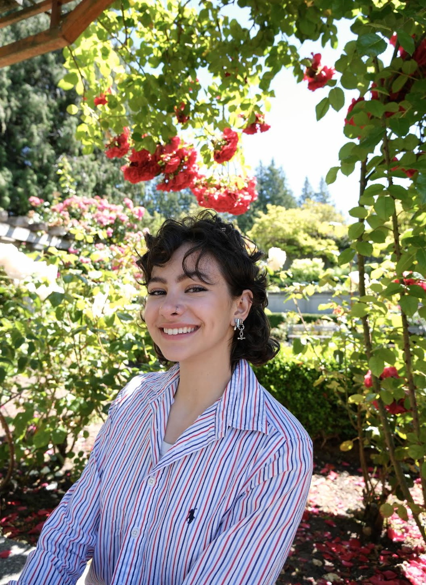

Guzide Irmak Bayir
Incoming MSc @ UBC · LLM Research · Teaching Assistant
I'm a Computer Science student at UBC passionate about figure skating, dried flower arrangements, and music production. Currently, I'm focused on Natural Language Processing research, investigating semantic consistency in LLMs and having recently completed a RAG-extended LLM chatbot.
I'm most energized by identifying practical solutions to reliability challenges in LLMs. What drives me is determining which research directions create the most value for our communities, and I believe these directions are highly entangled with interpreting LLMs and assessing their trustworthiness.
Learning alongside people at all levels gives me joy. The middle and high schoolers I volunteer with reiterate to me the power of knowledge and the importance of its generational transfer, while senior researchers push me to build crystallized intelligence; to think critically about the non-technical dimensions of life and how they connect back to our technical work.
Outside of research and debugging, I serve as the Research and Graduate Studies Liaison of Women in Computer Science (UBC WiCS), building equitable pathways for gender-diverse undergraduates to pursue academic research opportunities.
A core value of mine is promoting accessibility. Making what I know and learn understandable and engaging to others helps me fulfill this value, and ties to another core value of mine: to build community. Those who I look up to are people who redefine what a ladder of success looks like on their own terms, and even more importantly, build other ladders once they reach the top. I've witnessed the benefits of extended hands, and hope to honor the ones extended to me by doing the same.